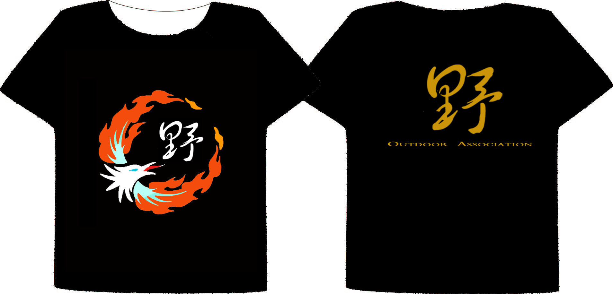
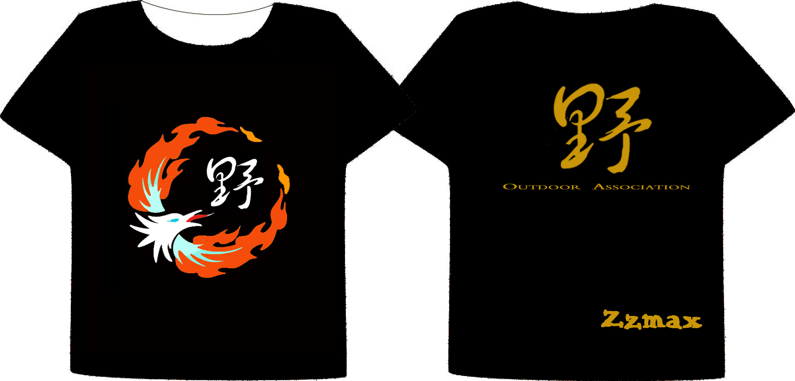

发信人: hongchuj (我是新手), 信区: outdoor
标 题: 会衫登场记
发信站: 饮水思源 (2012年03月14日00:26:33 星期三)
咳咳~~~~
不负众望，大家期待已久的会衫终于出炉啦！！！
我们行诸山野，困宿苍穹~
我们立命天地，心似琉璃~
穿着它,我们终于可以很自豪地跟妹只们说——
——看,我可是野人阿,很拽有木有阿！！
恩~
那话不多说，有请我们的主角粉末登场把
小衫如是说：
好想念大家啊~~~~~
大家也期待我很久了吧~~~~
嘿嘿~~ 我来也！！
[帷幕缓缓打开。。。]
 screen.width - 200){this.width = screen.width - 200}">
我是小衫啦，大家好~~
大家已经看到我了吧
我整体是黑色的哦，
大家说像不像冷静又睿智的行者呢？
我嘀正面是变形的浴火凤凰，它包围并保护着“野”字，
代表我们协会像浴火后的凤凰一样，在九重云霄之上飞舞~~
（也没准顺便俯视下别人•••^_^ O(∩_∩)O 嘿嘿）
我嘀背面是金色的“野”字，字体狂放豪迈，代表野人们奔放不羁的内心~~
我能不能永葆青春？？
大家放心啦~~
本小衫可是专门的印刷工艺哦
肯定会陪伴大家很长时间的拉~~ ~
小衫如是说：
大家觉得我长得肿木样哦~
是不是帅爆了？
别当场表扬我哦，我会不好意思哒~~
[台下观众热烈鼓掌中。。。]
我们的小衫真是谦虚，
其实今天我们的小衫还给大家带来了一份特殊的大礼哦~~~
 screen.width - 200){this.width = screen.width - 200}">
大家看到了么~~仔细看仔细看~
WOW!!
你可以在会衫背面印上属于自己的ID哦！！！
就在背面“ZZMAX”那个位置上啦~ ~
换上大家自己的专属ID就可以了哦~~~
是不是爽爆拉！！
大家有没有很兴奋呐~~~~
[台下观众起立鼓掌中]
小衫如是说：
大家喜不喜欢我给大家的SURPRISE呢？？
还在犹豫什么？？
赶快把我带回家吧~~~~
↓
↓
↓
发送
“姓名+性别+件数+手机号+(属于自己的ID内容)”
到
18817556169洪同学
*如果尺码有特殊需要请说明
↓
↓
小衫如是说：
只要55RMB（伍拾伍元）哦~~~
小衫就跟着你乖乖嘀回家！
（等小衫到货了会通知大家统一领取哦~ ~ ）
↓
↓
↓
那么
小衫先睡啦~
期待明早起来能躺在大家温暖的衣柜里~~
（非常抱歉。。。飞信君不懂bbs。搞了半天图片也只有链接T-T。。。我有罪~~）
（大家现在看到的是修复后版本>_<）
（此卖萌文目测是人人君写的。。。我只负责传T-T。。。图片什么的好讨厌啊。。。）
--
※ 来源:·饮水思源 bbs.sjtu.edu.cn·[FROM: 2001:da8:8000:f089:e95d:acf2:2264:df13]
※ 修改:·hongchuj 于 2012年03月14日00:32:30 修改本文·[FROM: 2001:da8:8000:f089:e95d:acf2:2264:df13]
※ 修改:·hongchuj 于 2012年03月14日00:33:59 修改本文·[FROM: 2001:da8:8000:f089:e95d:acf2:2264:df13]
|